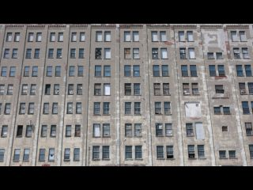
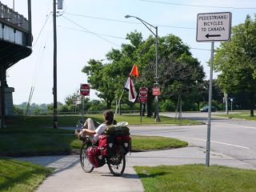
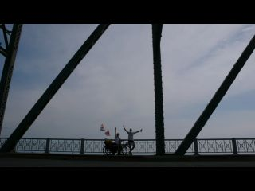
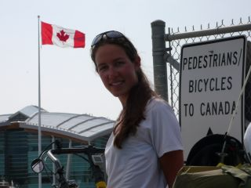
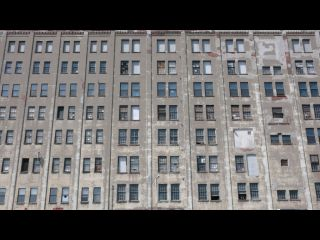
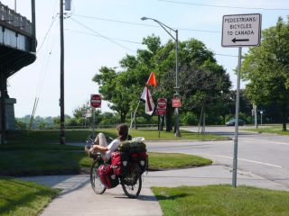
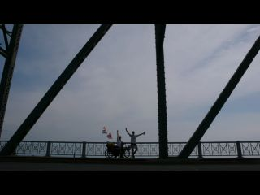
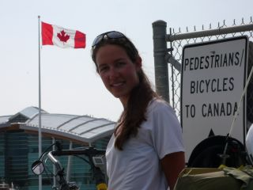

Canada, nous voilà !
Saturday, June 20, 2009 7:58:52 PM
Et voilà ! Nous venons juste de passer la frontière états-unienne pour entrer au Canada. Nous ne pensions pas initialement avoir le temps de traverser tous les Etats-Unis du Sud au Nord. Et finalement ça s'est fait tout seul. Il faut dire que le dénivelé n'avait rien d'impressionnant, que les routes ne sont pas trop mauvaises, et que ce pays... Il est pas si grand finalement !
Ne répétez pas ces dernières paroles à un Américain, ça ne lui plairait pas, mais alors pas du tout. Nos seules petites difficultés pour pédaler sont venues du temps. Mais rien de bien méchant.

Nous sommes donc arrivés tous frais à la frontière américaine après avoir traversé la (très moche) ville de Buffalo. Nous avons réussi à faire passer nos vélos à travers un tourniquet métallique pas conçu pour les vélos couchés. Et juste là, Francis trouve à ses pieds un beau billet de 10$ canadiens. Quel pays accueillant !

Ensuite il y avait un panneau "Pietons et cyclistes voulant entrer au Canada, par la". Donc Francis a décidé d'esquiver complètement le bureau du douanier, qui est sorti en nous courant après. " Et vous venez d'où comme ça ? Vous avez des papiers ? " On ne passe quand même pas tout à fait inaperçus avec nos bécanes.
C'était juste un petit contrôle de routine.

Puis nous avons traversé le "Peace bridge", qui surplombe la Niagara River et permet de passer au Canada.
La, le jeune et beau douanier brun et baraque nous accueille, nous pose les questions de routine : " Vous avez de l'alcool, du tabac, des armes a feu, de l'argent ?" "Oui, on a 10 dollars"
Il nous demande où on va. "On sait pas encore". Si on connaît des gens au Canada ? "Non".
"Vous travaillez ?... Ah, un banquier et une dentiste. Et vous avez pris 10 mois de vacances ?!!!! Vous en avez de la chance".

Il va nous tamponner nos passeports et revient.
"Bon et vous avez fait quelle distance avec ces engins ?" "7000 miles, pas mal"
"Et c'est quoi ce drapeau américain là ? Il est où votre drapeau canadien ?" "On n'en a pas encore" "bon, bah alors c'est la première chose que vous allez acheter. Et n'oubliez pas d'enlever ce drapeau américain d'abord !!"
Nous voilà prevenus, les Etats-Unis, c'est fini !
Ne répétez pas ces dernières paroles à un Américain, ça ne lui plairait pas, mais alors pas du tout. Nos seules petites difficultés pour pédaler sont venues du temps. Mais rien de bien méchant.

Nous sommes donc arrivés tous frais à la frontière américaine après avoir traversé la (très moche) ville de Buffalo. Nous avons réussi à faire passer nos vélos à travers un tourniquet métallique pas conçu pour les vélos couchés. Et juste là, Francis trouve à ses pieds un beau billet de 10$ canadiens. Quel pays accueillant !

Ensuite il y avait un panneau "Pietons et cyclistes voulant entrer au Canada, par la". Donc Francis a décidé d'esquiver complètement le bureau du douanier, qui est sorti en nous courant après. " Et vous venez d'où comme ça ? Vous avez des papiers ? " On ne passe quand même pas tout à fait inaperçus avec nos bécanes.
C'était juste un petit contrôle de routine.

Puis nous avons traversé le "Peace bridge", qui surplombe la Niagara River et permet de passer au Canada.
La, le jeune et beau douanier brun et baraque nous accueille, nous pose les questions de routine : " Vous avez de l'alcool, du tabac, des armes a feu, de l'argent ?" "Oui, on a 10 dollars"
Il nous demande où on va. "On sait pas encore". Si on connaît des gens au Canada ? "Non".
"Vous travaillez ?... Ah, un banquier et une dentiste. Et vous avez pris 10 mois de vacances ?!!!! Vous en avez de la chance".

Il va nous tamponner nos passeports et revient.
"Bon et vous avez fait quelle distance avec ces engins ?" "7000 miles, pas mal"
"Et c'est quoi ce drapeau américain là ? Il est où votre drapeau canadien ?" "On n'en a pas encore" "bon, bah alors c'est la première chose que vous allez acheter. Et n'oubliez pas d'enlever ce drapeau américain d'abord !!"
Nous voilà prevenus, les Etats-Unis, c'est fini !